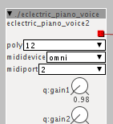

2 posts were split to a new topic: Open Source - Developer participation
USB Midi Controllers
TTotelka
#42
I´ve tried a Maschine MK1 and it doesn´t seem to work. I´ve tried powering the axoloti via computer usb port and with a 9V 1A power plug.
It does the same led animation that when you plug it to a computer, but after that it just stays switched off.
I guess since it is a controller made specifically for its own software there´s something there making it not work.
No big deal, I wasn´t planning on using the Axoloti with the Maschine, I was just curious. Just letting you know.
alex
#43
Maschine mk-1 does not work, I guess it needs more power, because most of the time it doesnt even finish the startup animation.
yeah, they do that 
same happens when connecting Maschine controller to for example a linux computer; usb is detected and everything , but since it doesnt run their software the controller shuts itself off.
thetechnobear
#44
If its not a class compliant midi device then it will not work... unless you find a developer willing to write a driver for it.
(assuming the protocol is documented)
RSP
#46
Just confirmed that the Arturia Beatstep Pro is working fine with the Axoloti powered from my laptop. BSP runs fine on USB power from the Axoloti, and I can still drive a pair of Sennheiser HD590s (which aren't horribly inefficient but aren't exactly efficient either) well enough. When I have more time I'll see if the Axoloti can still power it when it's sending CV.
janvantomme
#47
I can confirm that the Roland V-Drum TD1KV works as a midi controller as well. Just tested it tonight with a drum patch I modeled.
Missun
#49
alex
#50
@Missun
Got it working now.
it was sending on midi-channel 2.
I was using the demo patch 'electric piano' to test, but turns out the midiport setting is not functioning ; midichannel can only be set in Views > Settings >MidiChannel .

alex
#52
in many years of working with midi I've never seen midi-ports other than in/out/thru , so with a range of 1-16/omni I assumed it could only mean 'midi channel' .
So what does it mean? irq setting ?
thetechnobear
#53
It's used on USB midi , a USB device can expose multiple ports eg an ableton push as a user port and a live port, ive also a USB midi cable which has 2 midi din addressed as 2 different ports, it's pretty common with USB devices
thetechnobear
#54
Yes 16 ports, for the same reason as channels, it uses 4 bits. But that's the only reason.
( and no, no relation to hardware Irq or otherwise)
lab77
#56
Korg electribe2 sampler confirmed working as use as a sequencer/keyboard instrument. I was even able to assign cc from the electribe's knobs to control the axoloti. This is going to be a fun combo! 
RSP
#57
Little update on the Beatstep Pro, When it's powered from the Axoloti in USB host mode AND the line out is patched to a mixer AND the Axoloti is connected to a computer via USB there is a pretty serious ground loop. I haven't had a chance to go through and isolate it but I know I wasn't getting it from the headphone output. The BSP has known ground loop issues so it isn't really a surprise and it's not an issue when no computer is connected but I figure people would want to be aware of it. Easiest workaround is to just use DIN midi when I'm patching, and the USB ground isolator that shipped with the BSP will probably work but I can't confirm that for a few days.
Not a big thing for me personally.
johannes
#58
Could you try powering Axoloti with a DC wall wart supply? The current through the Axoloti USB device port will generate a voltage drop between your computer ground and Axoloti ground - and that modulates with the power consumption.
RSP
#59
That's the plan for actual use for sure. This was almost definitely a Beatstep Pro issue, not an issue with the Axoloti, I just wanted to put it out there so people who might be considering it would know.
On the bright side, I finally got the chance to spend some time using the BSP in controller mode with a patch I've been messing with and it works great for that, in fact I don't really feel much need to use GPIO for routine knob and switch type controls, so they're freed up for more esoteric stuff down the road.
johannes
#60
I mean, supplying power to Axoloti via the DC barrel socket may eliminate the ground loop issue when connecting to a computer.
Often the problem comes from sharing the same power supply, like when using usb bus power.